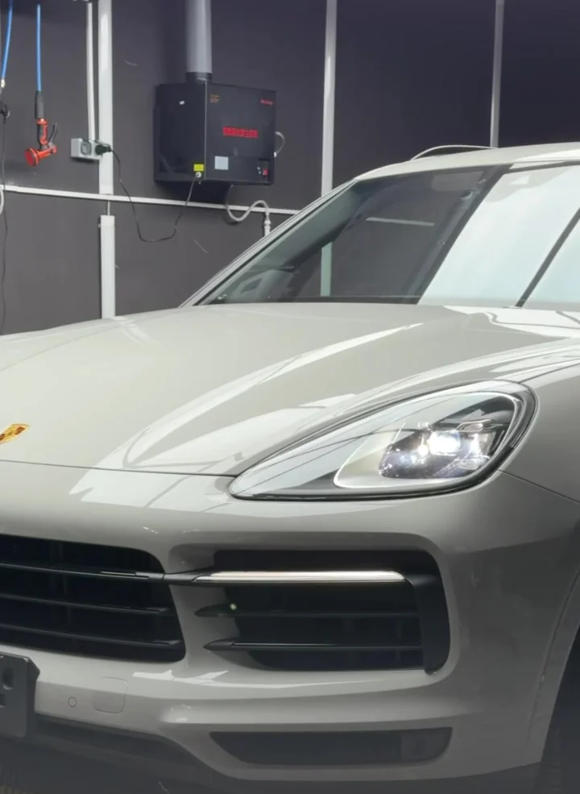
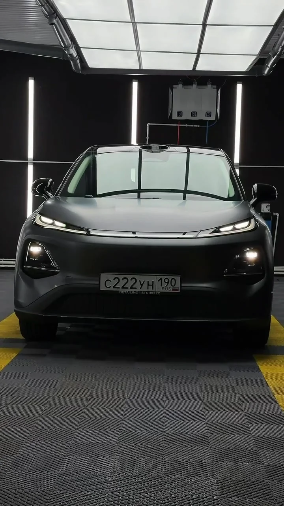

S БАЗОВАЯ ЗАЩИТА
Зона риска
Капот, передний бампер и крылья, фары, стойки, зеркала, полоса над лобовым стеклом и зоны под ручками.
Уточнить стоимость ↗ДЕТЕЙЛИНГ В ЗЕЛЕНОГРАДЕ
Сохранить заводской цвет.
Или раскрыть новый характер.
Защитная оклейка в STUDIO 22.

01 / ЗАЩИТА КУЗОВА
Под ваш автомобиль.
Под ваш сценарий.
От самых уязвимых элементов до полной оклейки. Выберите объём защиты, а материал и детали обсудите со студией.
Капот, передний бампер и крылья, фары, стойки, зеркала, полоса над лобовым стеклом и зоны под ручками.
Уточнить стоимость ↗Всё из пакета S, а также защита порогов и зоны погрузки — для ежедневных поездок и вещей, которые всегда с вами.
Уточнить стоимость ↗L — кузов без полной оклейки крыши. XL — с крышей. Задние фонари не входят в оба пакета.
Подобрать пакет ↗Состав — по публикации студии. Актуальную стоимость, материал и условия подтвердят при консультации.
02 / РАБОТЫ СТУДИИ
Больше в Telegram ↗Реальные автомобили и реальные проекты.
Кадры из официального канала STUDIO 22.

САТИН / STUDIO 2203 / НЕ ТОЛЬКО ВНЕШНИЙ ВИД
Оценка кузоваСостояние лакокрасочного покрытия определяет, готов ли автомобиль к оклейке.
Подготовка поверхностиДвухфазная мойка, химчистка кузова и очистка глиной — по составу пакетов студии.
Оклейка и сборкаРабота с элементами кузова, установка плёнки и обратный монтаж деталей.
Плёнка помогает защитить покрытие от повседневных воздействий, но не предотвращает повреждения при сильных ударах.
04 / НАЧНЁМ С ВАШЕГО АВТОМОБИЛЯ
Отправьте в Telegram марку, модель и фото автомобиля.
Обсудите со студией покрытие, стоимость и время визита.